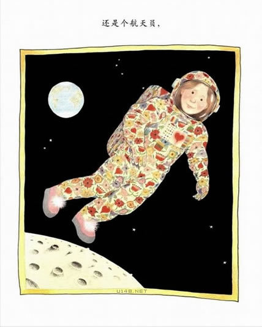

安东尼·布朗绘本：我妈妈
继《我爸爸》后，安东尼·布朗绘本第二弹——《我妈妈》。
《图画里的妈妈造型与《我爸爸》相仿，都是身着睡袍、脚蹬拖鞋，不过妈妈的睡袍像是一座花园，
拖鞋则是粉红色的，这种家居式的打扮，极具亲切感。相对于象征爸爸的太阳图案，用来象征妈妈的
是红色的爱心，爱心和花朵一再以不同的面貌出现在每个画面中。
这是我妈妈，她真的很棒！
我妈妈是个手艺特好的大厨师！
也是一个很会杂耍的特技演员。
她不但是个神奇的画家
还是全世界最强壮的女人！
我妈妈是一个有魔法的园丁
她能让所有的东西都长得很好
她也是一个好心的仙子
我难过时，总是把我变得很开心
她的歌声像天使一样甜美
吼起来像狮子一样凶猛
我妈妈真的，真的很棒！
我妈妈像蝴蝶一样美丽
还像沙发一样舒适
她像猫咪一样温柔
有时候，又像犀牛一样强悍
我妈妈真的、真的、真的很棒！
不管我妈妈是个舞蹈家

还是个宇航员
也不管她是个电影明星
还是个大老板，她都是我妈妈
我妈妈是一个超人妈妈
常常逗得我哈哈大笑
我爱他
而且你知道吗？
她也爱我！
（永远爱我）